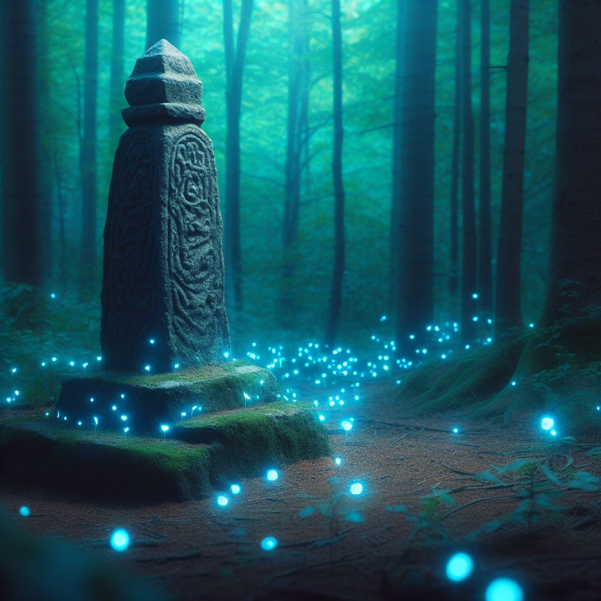

Al ixir de la taverna veus al davant la mar, amb alguna que atra aona trencant contra el acantilat de pedres. Son les 12 del matí, amb la pancha plena i la sed saciada, esteu preparats per a la vostra primera gran aventura.
Veieu un camí amb dos direccions dreta o esquerra. Mirant cap a la mar:
A la dreta veieu a lo lluny una montanya de pedra inescalable, per lo que el camí te una cruva tancada cap l’interior que no vos deixa vore que hi ha mes enllá ja que el camí es perd darrere d’un pinar.
Cap a la esquerre al fons es veu una ciutat costera, i mes a prop, dintre de la zona, un carro de madera que per lo vist se li ha trencat una roda, tres homes de diferents races están mirant com arreglar-ho.
Cap on anireu?
Si volen anar al Nord, no poden perque hi ha molta vegetació i es imposible avansar.
Si volen anar al Sur, es troven amb un alt acantilat, baix poden observar les ones trencant contra ell.
Si elegixen Dreta: van a la zona Granja de Mípalos antes de la zona hi ha un obelisco de maná, on si descansen un turno recuperen 50 de maná.
Si van cap a l'Esquerre:
Hola hola!! Unes cosetes sobre estos tres personatges que van a apareixer así. Els tres homens del carro.
Un Humá vellet que li diuen Barclay el vell, un semiorco que li diuen Kilug el lleig i un elfo que li diuen Kanvar el oscur.
Son tres lladres del gremi. Si eres lladre et reconeixerán com un d'ells per les robes negres i et dirán de robar als demes jugadors que ixquen de la taberna. Tu pots unirte a ells o convencerlos de que no roben a ningú. Si els convences sen anirán i en atres vegades que vajes cap allí, vorás a Barclai i podrás vendreli objectes robats. Si els maten, ja no apareixerán ahí.
Si va un jugador que no es lladre o el lladre del grup no els ha dit de no robar:
“Veieu el carro amb una roda trencá i tres homes vestits amb robes negres mirant-lo i senyalant la roda. Vos sembla un poc extrany que no hi ha cap animal cuadruped per a tirar de ell, ja que es un carro de cuatre rodes. Se vos acosta un dels del carro i vos diu:”
Barclai: Disculpen els seus senyors, ens ha ocorrit un problema amb el nostre carro, una mala pedra ens ha trencat la roda, tenim una de repost pero necesitem ajuda per a alsarlo i ficarli la nova. Podrien ser tan amables de ajudarnos?
Si diuen que si:
“Vos coloqueu en un dels costats del carro, comenseu a fer forsa per a alsarlo, de repent mentres esteu concentrats alsantlo, els homes vos ataquen per la esquena i vos peguen cop al cap llevantvos 20 punts de vida."
Comensa la batalla trau la carta de trio de ladrones
Si diuen que no:
“Veieu com els homes fan mala cara i s’acosten a vosaltres traguent les seues armes”
Kanvar: Ja t’havia dit que no funcionaria.
Kilug: Aso es un atrac, doneuvos totes les vostres pertenences o vos matem!!
“Era una trampa!
Independentment de aso, si seguixen cap a l'esquerre está la ciutat de Salimar
En cas de que el jugador siga lladre i no hajen matat als lladres
"Veus a Barclai el vell, está en el mateix lloc on tel trovares la primera vega, este al voret et guinya un ull."
Barclai: "Hey si necesites vendre algo robat, teu puc comprar".
No es pot convenser de que s'unisca al grup
Si han aceptat la misió de la cambrera de matar a un conejacón
"Veieu uns arbustos moures, de ells ix un Conejacón amb una cicatriu en el cap, este vos mira amb molta malisia."
Si han aceptat la misió de netejar el nom de la reptiliana:
"Examineu el camí que recorre paralel el acantilat, podeu vore un objecte entre l'herva, l'agafeu, es tracta d'una poció de vida, encara te el preu posat, per lo que está clar que es un objecte robat, més enllá podeu vore altre poció, el rastre d'objectes van cap la montanya del costat de la Granja de Mípalos "